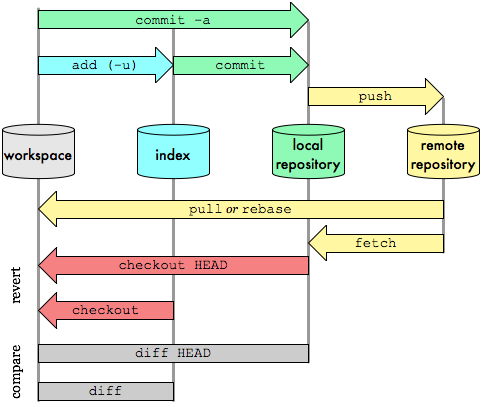
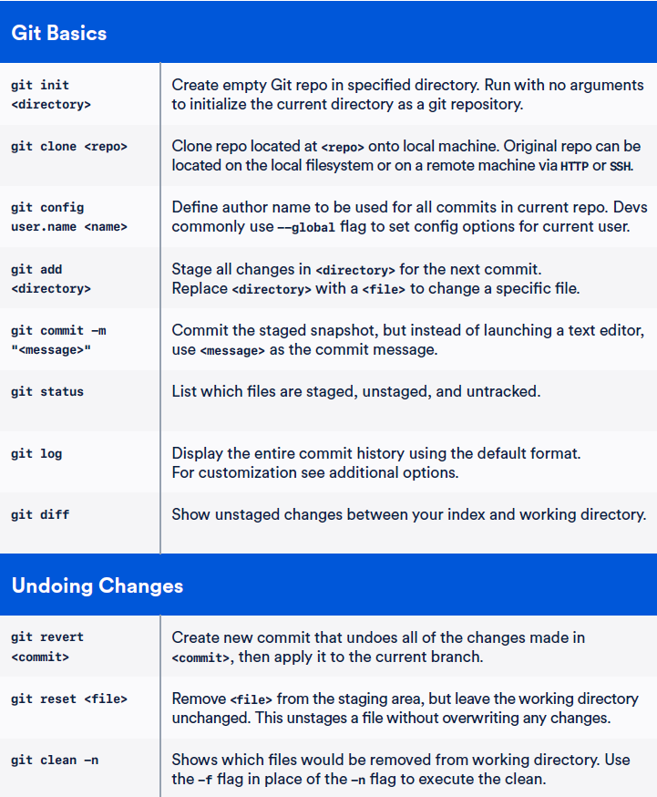
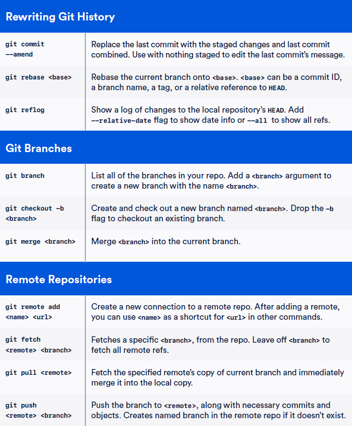
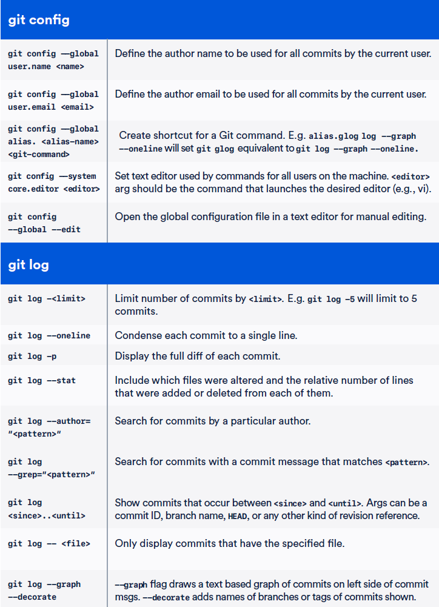
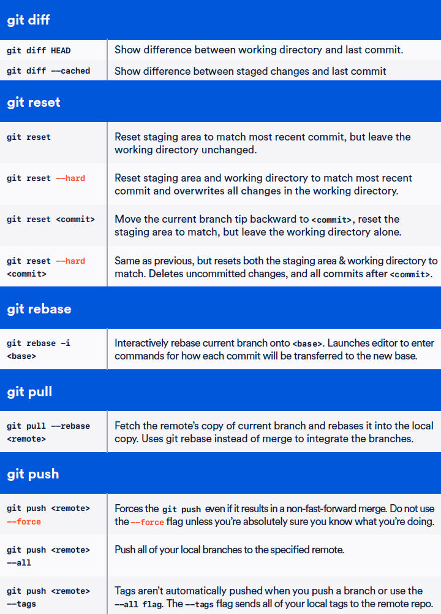

# install on Linux
sudo apt-get update
sudo apt-get install git
git --version
# set the username and user email address to be used
git config --global user.name "Emma Paris"
git config --global user.email "eparis@atlassian.com"
# initialize the repository as Git repository
git init
# state of the working area and staging area
git status
# add all files to the staging area
git add .
# specify files that should be tracked
git add git_commands.md
# capture a snapshot of the project staged changes
git commit -m "Initial commit"
# commits history
git log
git log -5 # last 5
git log a743d2c..04f3d9a # from one commit to other
git log --stat
git log --all --oneline --graph --decorate
git show a743d2c # commit details
git diff # difference in files of the working area and directory
git diff --staged # difference in working area and staging area
git diff a743d2c..04f3d9a # difference between commits
# stash - temporary shelves/changes to your copy
# work on something else, and then come back and re-apply them later
git stash # only the files that are in the staging area can be stashed
git stash save "changed title"
git stash list # stashed changes
git stash pop # retrieve last stashed change
git stash show -p stash@{1} # retrieve stash with index 1
git stash clear # delete all stashes
git stash drop stash@{0} # delete specific stash
# new branch
git branch branchName
git branch newBranch fromBranch
# new branch inside a folder
git branch branchFolder/branchName
# switch to another branch
git checkout branchName
# switch to another branch present in another folder
git checkout branchFolder/branchName
# create and checkout to the new branch at the same time
git checkout -b branchName
# create and checkout to the new branch present in another folder at the same time
git checkout branchFolder/branchName
# comparing different branche
git diff master..new_feature
# merge to a new branch
git merge master
# change the name of the current branch
git branch -m newBranchName
# change the name of the other branch
git branch -m oldName newName
# delete branche, switch to other to avoid error
git branch -d branch_to_delete
git branch -D branch_to_delete # delete unmerged or with commits
# origin - default name Git gives to the server you cloned from
# automatically sets up local master branch to track the remote master branch
git clone https://github.com/schacon/ticgit
git remote [-v]
git remote show origin
# connect local repo with remote repo
git remote add origin https://github.com/schacon/ticgit
git remote add pb https://github.com/schacon/ticgit
# fetch and merge remote branch into current
git pull
git pull origin master
# if "git pull" gives "fatal: refusing to merge unrelated histories"
git pull --allow-unrelated-histories
# only download the data to local repository, doesnt automatically merge
git fetch origin
# push master branch to origin server
git push origin master
git push --all origin
# set all of your branches to automatically use this remote repo when you use git pull
git push --all --set-upstream origin
# change all remote-tracking branch names
# what used to be referenced at pb/master is now at paul/master
git remote rename pb paul
git remote remove paul
git remote # origin
# updating the last commit message
git commit --amend -m "Updated message"
# blank commit (no changes added or deleted)
git commit --allow-empty -m "blank commit message"
# total number of commits on a particular branch
git rev-list --count branch-name
git rev-list --count main
# checking files from different a branch
git show branch-name:file-name
git show main:README.md
# staging (adding) and committing the changes in a single command
git commit -am "message"
# download files from any repository
git fetch origin master
# remove local caches
git fetch -p
# increase the postBuffer for larger files upload
git config http.postBuffer 100000000






Back to Main Page